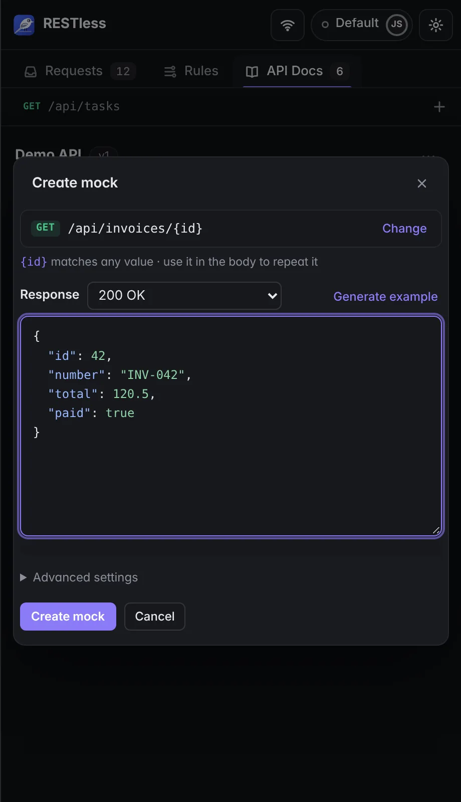
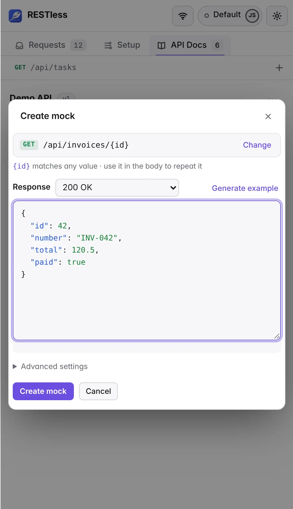
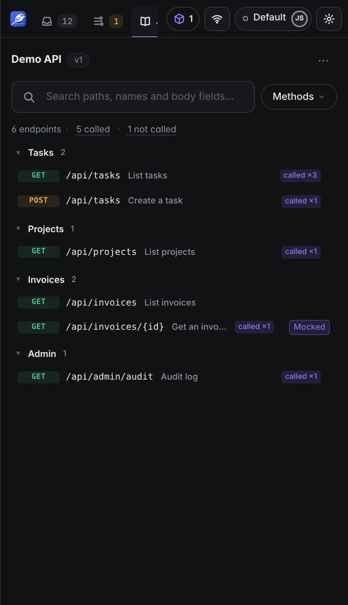
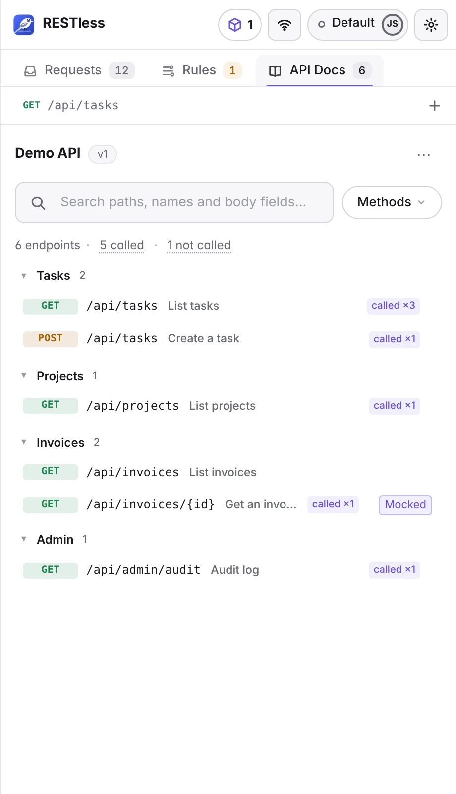
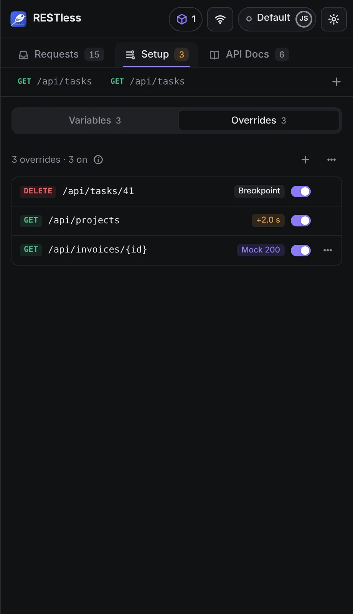
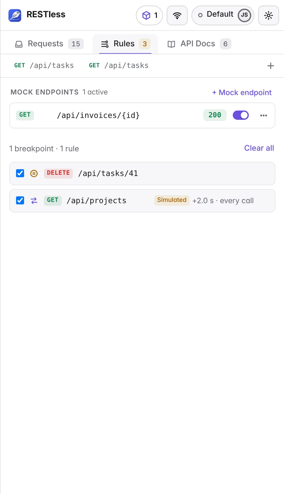

Mock endpoints
Answer endpoints that don’t exist yet. No backend needed.






Create a mock
- Open API Docs and hover an endpoint.
- Click Mock. The response is already filled in from the docs.
- Edit it if you like, then click Create mock.
No docs? Use Rules → + Mock endpoint and type the path.
Use path values
/api/invoices/{id} answers /api/invoices/42. Write "{id}" in the body to repeat the value.
Manage mocks
In Rules → Mock endpoints: switch a mock off and on, click it to edit, or use ⋯ to duplicate or delete it.
Calls answered by a mock show a Mocked tag. Click it to edit the mock.
Good to know: mocks work in your browser while RESTless is on. Other browsers, servers and tools like Postman still reach the real API.